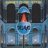

strange music page
jap's progre * * * de-javu/sakuraba motoi
#Deja-vuはキーボードの桜庭統（さくらばもとい）を中心としたＥＬＰのようなキーボードトリオでした、Deja-vu自体はすぐに解散してしまったのですが、桜庭統さんはその後ゲームミュージックのサントラを何枚かだしています。壮大で典型的なシンフォですけどとてもかっこよいです。
- デジャヴ (deja-vu)
- 桜庭統
-
ゲームミュージック
-
その他
#デジャヴとして残した唯一のアルバム、典型的なＥＬＰタイプのトリオですが他のＢ級バンドと較べると圧倒的に曲が良いです、ツボを押えているというか聴いてて気持ちいいです。Drumsの工藤元太さんはこの後ヴァーミリオンサンズ
(vermilion sands)の再編に加わり(残念ながらVermilion Sandsも現在は活動停止中)現在はキルシェ(kirche)というバンドに在籍しています。

- Prelude
- Next world
- Baroque in the future
- Daydream
- Flash !
- Byzantium
- Deja-vu
- 桜庭統 (organs,keyboards,synthesizers)
- 長妻撤哉 (bass,vocals)
- 工藤元太 (drums,percussions)
MADE IN JAPAN RECORDS:
#元ホワイトファングの下田武男と後期デジャヴの井下憲を加えてのMade in
Japanからのソロアルバム。全てインストですが基本的にはDeja-vuと路線は変らないシンフォニックロックです。これでもう少し煮詰めて作ってあればもっと良かったかも。現在入手困難だと思います。
- Humpty Dumpty
- Tone access
- Byzantium
- Motion
- Paradigm
- Narratage
- Scrap and Build
- Drama Composition
- 桜庭統 (keyboards,piano,organ)
- 下田武男 (drums,percussions)
- 井下憲 (bass)
MADE IN JAPAN RECORDS: MCD-2920
#Play Station用ゲームソフト、Beyond the Beyondの音楽集です。作曲、演奏は元デジャヴの桜庭統さんです。ゲームミュージックという枠の中ではありますが、壮大なシンフォニックロックです。難波弘之さんもゲストで参加しています。
- 約束の地へ
- 飛翔の時
- Beyond the World
- 無情の原野
- 新たなる旅立ち
- 桜庭統 (keyboards,synthesizers,mellotron)
- 難波弘之 (keyboards on 1.4.)
- 下田武男 (drums,percussions)
antinos record: ARCJ-33 (1996)
#スーファミのゲームらしいです。DISC-1のアレンジバージョンが桜庭統さんの作曲です(ただし２、６、７、８の編曲は別の人)。DISC-2はヴォイスコレクションみたいです(こっちは全然聞いてません)。相変わらずの壮大なシンフォニックロックですが、Beyond the Beyondに比べるとプログレ度は低いようです。どうせならガチガチのプログレにしてくれれば良かったのに....
- New Generation -Opening Theme-
- Poem -Town Theme-
- Worlds -Fields Theme-
- Through the mills -Battles Theme-
- Death Trap -Dungeouns Theme-
- Kingdom -Castles Theme-
- As time goes by -Events Theme-
- Mother Ocean -Ending Theme-
- 桜庭統 (all composed)(arranged on 1.3.4.5.)
- 五反田義治 (arranged on 2.6.8.)
- 佐藤和史 (arranged on 7.)
SONY RECORDS: SRCL-3686/3687 (1996.11.1)
#サターン用ゲームソフト。今回はわりと１曲がコンパクトな内容です。戦闘曲などはやっぱり格好良いです、個人的には前作よりも好きです。violinの岸倫子さんは
金子飛鳥stringsの方でLINN-TETRAというバンドもやっている人らしいです、この方のviolinも格好良いですねー。もうホントに伝統芸的なプログレ曲なんですけどね、イイです。
- プレリュード -蝕からの誘い
- 招かざる者たち
- 闇の祭典 パート１
- 遥か底のサーチャー
- 風塵の地平の果て
- 生と死の舞踏 (デッドダンス)
- 彷徨い人の哀歌
- 闇の祭典 パート２
- 安息のラプソディー
- エンドレスウィナー
- 桜庭統 (keybaords)
- 下田武男 (drums)
- 岸倫子 (violin)
Oo Records: OOCO-26 (1996.12.12)
#'89.7.23の川崎クラブチッタでフランスのアトール(atoll)を迎えてのライヴ、デジャヴはメンバーチェンジして
アウターリミッツの上野知己が入ってます。
- Atoll/Tu Sais
- Atoll/L'age D'or
- ROSALIA/永遠のライゼ
- 坂上伊織 (vocals)
- 三浦奈緒美 (keyboards)
- 武田幸代 (guitars)
- 藤本絵衣子 (bass)
- 西田恵美子 (drums)
- SOCIAL TENSION/マクベシア再び
- 遠藤信夫 (keyboards)
- 太田雅彦 (vocals,bass)
- 岩崎卓 (drums)
- WHITE FANG/ONLY YOU CAN HELP
- WHITE FANG/CRIMSON WAVES
- DEJA-VU/Concentration
- DEJA-VU/Deja-vu
- 桜庭統 (keyboards)
- 上野知己 (vocals,keyboards)
- 井下憲 (bass)
- 工藤源太 (drums)
KING RECODS/CRIME: 250E-2068 (1989)